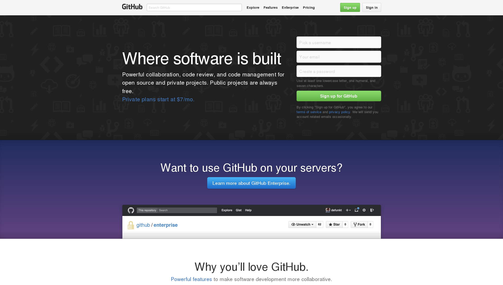
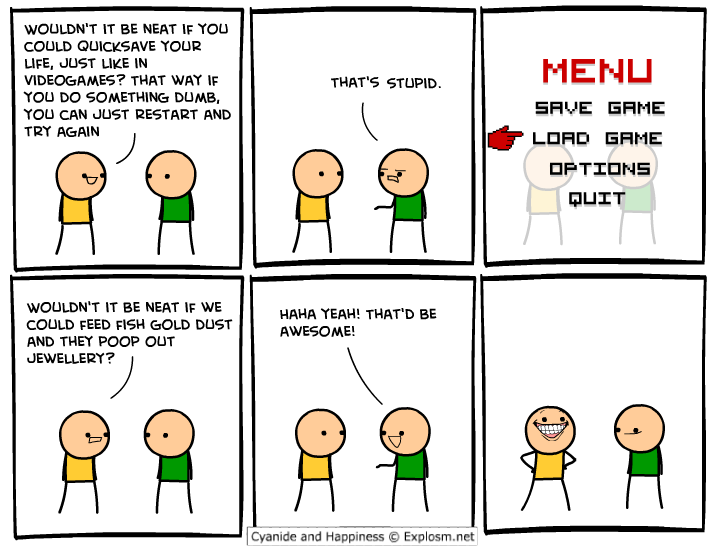

The Basics of Git
An interactive introduction to Git and Github
Sponsored by the OpenSource Club
What you should have with you
- A computer
- Access to a Unix-based terminal
- Git installed check with `git --version`
- A Github account
Installing git
| Distro | Command |
|---|---|
| Debian-based | #apt-get install git |
| Redhat-based based | #yum install git |
| Fedora(22 and on) | #dnf install git |
| Arch | #pacman -S git |
| Gentoo | #emerge dev-vcs/git |
| OS | Command |
| Mac | $git #then follow instructions |
| Windows | http://git-scm.com/download/win |
Signing up with GitHub
Traditional approach to Git

Git is quicksaving
Git as quicksaving
| Commit | Save |
| Branches | Different choices |
| Remotes | Saves from other people |
Where the analogy breaks
- Saves(commits) are easily combined with the saves(commits) from other choices
- People are usually sharing their saves(commits)
- You have to specify what to save
Let's start using Git
- make a directory for today's repos
$mkdir git_talk_repos - go to this directory
$cd git_talk_repos - Fork the repo at github.com/octocat/Spoon-Knife on the website GitHub
- Clone the repository to your copy
git clone https://github.com/userName/Spoon-Knife.git - Add the remote "upstream" to your local version
git remote add upstream https://github.com/octocat/Spoon-Knife.git
What did we just do?
- Forking
- Cloning
- Remotes
Forking
You (generally) can't write to repos you don't own on Github. Forking gives you a version of the code also on Github that you can maintain and modify
Cloning
Cloning puts the project on your computer and allows you to commnicate with the repo you cloned.
Remotes
different sources from which you get your code. Generally if you've forked a project you'll need to get more up to date versions of the code from the original repo (usually the upstream remote).
Visualizing Git
A repo is represented as a graph
A--B--C--D topic A--B--C--D topic
/ --> / \
E--F--G--H--I--J master E--F--G--H--I---J master
Each letter represents a commit, and different lines represent different branches
remotes
origin upstream
A--B--C--D topic HEAD
/
E--F--G--H--I master E--F--G--H--I--J--K master
refs
|
>---remotes
|
>---origin
| |
| >---master
| >---topic
| >---HEAD
|
>---upstream
| |
| >---master
Info from remotes is stored locally, and is udpated using git fetch.
What's on your computer vs what's on the server
One good question is what differentiates your repository on your computer from the remotes you interact with? The two are different:
- Remote repos: are bare
- Local repos: have a HEAD and working tree
HEAD: the commit where you are
Common Git commands
- git add
- git rm
- git commit
- git fetch
- git merge
- git pull
- git rebase
Git add
$git add <file>
Adds a modified or new file to be staged in order to be committed.
$git status Changes not staged for commit: (use "git add..." to update what will be committed) (use "git checkout -- ..." to discard changes in working directory) modified: index.html
$git add index.html; git status;
On branch master Your branch is up-to-date with 'origin/master'. Changes to be committed: (use "git reset HEAD..." to unstage) modified: index.html
Git rm
$git rm <file>
Stages a file to be removed in the next commit.
$ls
unnecessary_file src/ README.md
$git status
On branch master
nothing to commit, working directory clean
$git rm unnecessary_file
rm 'unnecessary_file'
$git status
Changes to be committed:
(use "git reset HEAD <file>..." to unstage)
deleted: unnecessary_file
Git commit
$git commit <remote> <branch>
Makes a "save" of the currently staged changes
$git status On branch master Your branch is up-to-date with 'origin/master'. Changes to be committed: (use "git reset HEAD..." to unstage) modified: index.html deleted: unnecessary_file $git commit -m "Removed unnecessary_file, and updated index" [master 2d1de69] Removed unnecessary_file, and updated index" 1 file changed, 1 file deleted, 87 insertions(+), 8 deletions(-) $
Git fetch
$git fetch <remote> <branch>
Retrieves the state of <branch> in the remote repository <remote> which can then be compared with the local repository
Git fetch should be used to check what has changed outside of your own machine
Git merge
$git merge <branch>
Merges the changes from <branch> into the current branch and moves the current branch's pointer to the merged commit. Note that the pointer for <branch> remains where it was before.
Git pull
$git pull <remote> <branch>
Runs a combination of git fetch and git merge. First it fetches the changes from <remote> <branch> and merges them into your local branch of the name <branch> (creating it if it doesn't exist).
Git reset
$git reset --hard <commit-sha>
Bring head back to a specific commit or HEAD(gets rid of all staged changes)
$git reset <file>
Unstages a file that is staged for commit
Git revert
$git revert <commit-sha>
Get rid of the changes made in a specific commit
Merge conflicts
One of the most feared terms in version control is 'merge conflict'. Don't automatically delete your repo though. We can still work through this
I'll do this example in the presentation but I should add an example later
Basic workflows on Github
- Naive approach
- Branch and merge
- Fork and merge
- Pull requests
Naive approach
| Remotes | 1 |
| Branches | 1 |
| Pros | Cons |
|---|---|
| Simple | More frequent merge conflicts |
| Requires everyone has write access | |
| Master/production can be disabled for time |
Summary
The naive approach is ideal for simple projects involving one user (think version controlling your school notes and homework), but is extremely problematic for most other projects.
Branch and merge
| Remotes | 1 |
| Branches | Multiple |
| Pros | Cons |
|---|---|
| Features can be worked on independently | Have to remember to keep feature branches up to date |
| Branches can be checked to work before merging into master | Requires everyone has write access |
Summary
Branching and merging is a good solution when working on a small trusted team. Master branch can be thought of as safe as experimental features can be worked on in feature branches. Works well for hackathons and such.
Fork and merge
| Remotes | #members+1 |
| Branches | 1-many |
| Pros | Cons |
|---|---|
| Each person has their own remote, so editing your own history won't mess up other people's repo(this is necessary in some companies that don't like numerous commits that can be squeezed into one | Have to ensure that the history you modify hasn't hit the upstream repo |
| You can do whatever you want to origin without messing up your teammates. | Need write access to the original repo |
Summary
Forking and merging is seen often on it's own and is more likely to be seen in a hackathon environment. While it provides some benefits in the ability for a user to edit their own history (good if your messing with something that requires API keys) it offers few other benefits.
Pull requests
| Remotes | #members+1 |
| Branches | many |
| Pros | Cons |
|---|---|
| Not all members need access to the original repo(anyone can make a pull request) | Relies on those with access to original repo to accept your changes(projects can die and needlessly split due to this) |
| Allows for a team member to review the code | Slowest method |
| Secure yet open |
Summary
The most widely used workflow for Git. It combines the other workflows into a secure and useable form that allows trusted users to edit the primary repository while still allowing for open contribution and ensuring good coding practices by encouraging code review. Just remember to create a different branch before making a pull request so you don't get stuck.
Let's make a pull request
- Navigate back to spoon-knife
- Check out a new branch
- Make any changes you deem necessary
- Stage your changes then commit them
- Check the state of origin
- Push your changes to origins
- Make a pull request from your repo on GH
Congratulations, you've made your first pull request!
The final sandbox
FAQ
Frequently asked questions, and concerns
Q: Are merge conflicts as impossible to deal with as they were in software II?
A: No, Software 2 used SVN which was centralized version control. Merge conflicts are rarer with distributed version control, and are usually not nearly as complex
Q: I REALLY don't want to mess up BOBs work by writing to the same file, so should I just copy the file and work on it separately?
A: No. If you're really concerned about overlapping, create a branch and merge at a later point when you can know it's safe
Q: How much should I commit? Should I commit half the project at once or should I commit after every sentence?
A: It's recommended that commits be atomic and not encompass a large amount of material. E.G. If you've added parsing for a language and implemented an automatic build feature in a project you should add the files(or parts of a file when you're more comfortable with git) and then commit the first part, then add the automatic build code and make it a separate commit